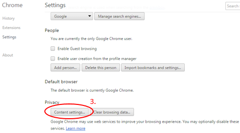
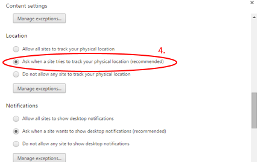
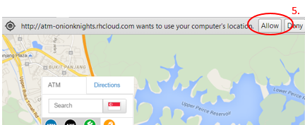

A: The "join queue" function will be disabled if the branch is unavailable. Thus, you should be able to join a queue as long as the branch is currently available.
A: You will receive an SMS that states the queue ID upon reaching the branch which you queued in. This queue ID's number is based on the timing in which you clicked on "Join queue". Queue ID expires after two hours so if you do not reach the branch in that timing, you will no longer be part of the queue.
A: Upon toggling on the "Standard Chartered Bank (SCB)" icon on the map, a list of SCB braches will be populated. Each of the branch segment populated will show the latest queue number at each of the branch. You will be able to sort the list by "Expected Wait Time" to find out which branch has the least queue number.
A: Upon toggling on the "Standard Chartered Bank (SCB)" icon on the map, a list of SCB braches will be populated. Each of the branch segment populated will show the distance from your current location to that particular branch. You will also be able to the sort the list in terms of distance by using the "Near Me" option.
A: Do ensure that your current location has been enabled.For desktop users using Chrome, you can enable location services by doing the following steps:
- Step 1: Select icon on top right corner of browser > Select "Settings"

- Step 2: Select "Content Settings" under Privacy
 - Step 3: Select "Ask when a tries to track your physical location (recommendations)" under the "Location" segment.
 - Step 4: Reload the page and select "Allow" when prompt with a dialogue box to allow site to use location services.

For desktop users using Internet Explorer, you can enable location services by doing the following steps:
- Step 1: Select icon on top right corner of browser > Select "Internet Options".

- Step 2: Select "Privacy" Tab > Uncheck "Never allow websites to request your physical location" > "Apply" button.

- Step 3: Reload the page and select "Allow once" when prompt with a dialogue box to allow site to use location services.

A: Your queue ID may have expired because you took longer than two hours to come into the branch. Please go to a bank staff for assistance.
A: You are not required to do anything - the queue ID assigned to you will be expired in 2 hours or by the bank's closing time.
A: Click on the Singapore flag beside the search bar and select the country you would like to search for.
A: No. A sign up is not required and the queue system is open to everyone for use.
A: Customers are unfortunately unable to request to be served by a specific bank staff. Instead, customers will be randomly assigned to any bank staff who is available at their time of availability.
A: As long as you have received an SMS stating that your virtual queue has been acknowledged, it will mean that you have successfully joined the queue. If you do not receive any SMS after 5 minutes, do refresh the page and repeat the process of joining the queue again.
Do ensure that the your notifications and sound is set to loud so that you will be able to receive alerts of messages which may be send to you, informing you of your queue ID and others.Ensure that you are in 3G or 4G coverage when you insert yourself into the queue.Should your phone run out of battery, do approach any bank staff for assistance.